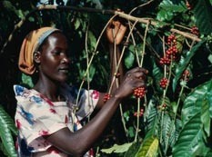
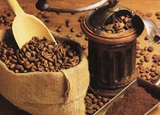

Сорта кофе из Африки
Арабика Бурунди АА (Arabica Burundi AA)

- Арабика Бурунди - кофе "с характером", среди других сортов его отличает отличное качество, хорошая крепость и кислотность со специфическим послевкусием.
Бурундийский кофе ценят во многих странах мира за его яркий аромат, богатый специфический шоколадный вкус, насыщенность и превосходную кислотность. Истинно
африканский кофе с высокогорных плантаций.
- Производство кофе в этой маленькой африканской стране началось в 30-х годах прошлого века. Сегодня кофе занимает важное место в экономике Бурунди, являясь
одной из основных экспортных культур.
- Бурундийский кофе арабика мокрой обработки классифицируется на семь степеней качества от ААА до ВВВ. Самый качественный кофе (ААА, АА) дает
великолепный настой. Кофе низшего качества годится для смешивания.
Арабика Замбия Лупили (Arabica Zambia Lupili)
- Сорт кофе, отличающийся разнообразием ароматов. Напиток из этого сорта кофе получается целебным, пикантным, пряным, с привкусом корки
мандарина. Он оставляет карамельный привкус и обладает ноткой дикой природы, свойственной исключительно кофе восточноафриканских сортов. Послевкусие долгое,
обволакивающее.
Арабика Кения (Arabica Kenya)
- Кофе арабика в Кении выращивают на высокогорных плантациях на высоте 1300-2100 метров над уровнем моря. В год собирают два урожая.
- Кенийские сорта славятся отчетливой индивидуальностью вкусового букета, с фруктовыми, а иногда лимонным или апельсиновым оттенками, высокой кислотностью,
а также характерной формой зерен.
- Кенийская арабика всемирно признанная как один из самых престижных сортов кофе в мире. Она обладает терпкостью, приятной остротой, крепостью, винным
привкусом и великолепным тонким, ярко выраженным, хлебным ароматом. Кофе идеальный для того, чтобы удивить друзей утонченным и изысканным напитком. Отличное
качество кенийского кофе является главной причиной того, что спрос на него в мире постоянно растет.
- Кения АА имеет мягкий, густой вкус в сочетании с ярким ароматом, долгое послевкусие, хорошо сбалансированный букет.
Арабика Кения РВ (Arabica Kenya PB)
- Кофе Арабика Кения РВ имеет полный насыщенный настой с винно-фруктовым вкусом. Его вкус очень своеобразный, с повышенной кислотностью, "переливается" от
каждого глотка и по мере остывания, так же, как и аромат. Основные ноты в аромате сходны с индонезийским кофе с нотами специй и табака, но его сильно выделяет
ягодный оттенок и легкий цитрусовый привкус.
- Кения занимает ведущее место среди африканских государств по объемам поставляемого кофе на мировой рынок. Кроме того, некоторые сорта кенийского кофе входят
в разряд элитных.
- Кенийские сорта славятся отчетливой индивидуальностью вкусового букета, фруктовыми, а иногда лимонным или апельсиновым оттенками, высокой кислотностью, а
также характерной формой зерен.
Арабика Малави Мапанга (Arabica Malawi Mapang)
- Малави Мапанга имеет богатый аромат фруктов и мандарина. Вкус сочетает яркую терпкость с цветочными оттенками и африканской кислинкой. Сильная терпкость в
сочетании с насыщенным ароматом приятно сочетается, и оставляет долгое приятное послевкусие цветов.
Арабика Танзания (Arabica Tanzania)
- Этот прекрасный сорт африканской арабики выращивается в тропических высокогорных лесах южного склона горы Килиманджаро.
- По вкусу похож на Кенийский кофе, но имеет более богатый и утонченный вкус с меньшей кислотностью. Урожай проходит первичную мокрую обработку.
- Характерный признак кофе из Танзании - «умеренный» вкус с непревзойденным тонким ароматом. Имеет мягкий, насыщенный сбалансированный сладковатый вкус и легкую
фруктовую кислинку. Довольно часто ценители кофе предпочитают танзанийские сорта за их деликатную кислинку. Отлично смотрится в дорогих смесях, а в чистом виде
удовлетворит любого гурмана.
Арабика Уганда Бугишу (Arabica Uganda Bugishu)
- Типично африканский кофе с винными тонами в аромате. Он напоминает кенийский кофе по вкусу, но легче по насыщенности. Сорт кофе арабика
превосходного качества, обрабатывается на склонах вулкана Элгон в Уганде.
- Уганде Бугишу присуща легкая кислинка, гармоничный вкус, и долгое ореховое послевкусие. Используется для приготовления кофе без кофеина.
Арабика Эфиопия Сидамо (Arabica Ethiopia Sidamo)
- Настой густой, с длинным послевкусием. Аромат тонкий, ярко выраженный, с фруктовым оттенком. Относится к мягким сортам кофе. Знатоки различают в Эфиопия Сидамо
особый винный вкус с фруктовым оттенком, более выраженный и насыщенный, по сравнению с другими эфиопскими сортами.
- Кофе имеет сильный нежный аромат, уникальный характер и яркое длительное послевкусие цветочных тонов
- Вкус Эфиопия Сидамо характеризуется деликатной кислинкой и чуть более интенсивной горчинкой, множеством сладких оттенков и очень низкой соленостью. В начале очень
мягкий и деликатный, вкус затем становится значительно плотнее. В аромате кофе эксперты выделяют ноты бергамота, абрикосовые и черничные тона, а также оттенки ванили
и какао. Для послевкусия Эфиопия Сидамо характерны оттенки ароматов поджаренного хлеба, карамели, розы и свежих сливок.
- Арабика Эфиопия Сидамо относится к лучшим мировым сортам кофе. Один из самых мягких и нежных сортов арабики, произрастающих в Эфиопии - родине кофе.
- Такой кофе хорош для любого способа приготовления. Его богатый и многогранный вкус раскрывает свои оттенки каждый раз по-новому. Запах ароматный, нагретый солнцем
- запах Африки.
Арабика Эфиопия Йоргачиф (Arabica Ethiopia Yirgachiff)
- Эфиопия - родина кофе, в частности, вида арабика, который растет здесь в диком виде. Самый ароматный и качественный кофе носит название Йоргачиф. Он оценивается
знатоками как один из лучших сортов. Он дает богатый настой с удивительным привкусом, в котором ощущаются цветочные нотки. Эфиопия Йоргачиф характеризуется прекрасным
букетом с мягким винным ароматом и легкой кислинкой. Хорошо сочетается в смеси с колумбийским и яванским кофе.
- Имеет нежный фруктово-шоколадный вкус с оттенком острых специй. Относится к мягким сортам кофе. Подходит для любого времени дня.
Арабика Эфиопия Йоргачиф РВ (Arabica Ethiopia Yirgachiff PB)

- Арабика Эфиопия Йоргачиф РВ - кофе с самой кофейной колыбели - Эфиопии. Имеет нежный фруктово-шоколадный вкус с оттенком острых специй. Относится к мягким
сортам кофе. Подходит для любого времени дня. Едва заметная винная кислинка и фруктовое послевкусие не оставит никого равнодушным. Ароматный, мягкий и насыщенный, Эфиопия
Йоргачиф РВ это действительно то, что понравится любителям густого, ароматного кофе.
- В общем, почти все ягоды кофейных деревьев содержат в себе по два зернышка, но бывают случаи, когда в кофейной вишне только одно зерно, которое срослось. Такие зерна
растут на кончиках ветвей кофейных деревьев, вручную отбираются, маркируются (Peaberry) (с англ. горох), и продаются как отдельный сорт кофе. Peaberry составляют
5% любого урожая кофе и содержат в себе двойную силу и крепость зерна. Кофе Йоргачиф РВ - для гурманов и ценителей богатого вкуса.
Арабика Эфиопия Джиммах (Arabica Ethiopia Djimmah)
- Сорт кофе арабики Джиммах (Djimmah) выращивается в окрестностях Джимма, крупнейшего города юго-запада. Кофе со знаменитого района Кафа дает острый и ароматный напиток
с винным привкусом. Мытый кофе Джима имеет прекрасный вкус, с небольшой кислинкой.
- Сорта Джимма и Сидамо придают напитку неповторимый, возбуждающий букет
- Кофе этого сорта имеет сильный аромат, при заваривании образует высоконасищенные настои с оригинальным винным привкусом и ароматом.
Арабика Эфиопия Лима (Arabica Ethiopia Lima)
- Кофе с самой кофейной колыбели - Эфиопии.
- Ароматный, мягкий и насыщенный, Эфиопия Лима это действительно то, что понравится любителям густого, ароматного кофе. Растет на родине кофе, он обрабатывается
традиционным способом, без использования химикатов и удобрений. Едва заметная винная кислинка, и фруктовое послевкусие не оставит никого равнодушным.
Робуста Камерун (Robusta Cameroon)
- Этот сорт кофе характеризуется высоким содержанием кофеина в зернах. Это крепкий насыщенный напиток с оригинальным карамельным привкусом и замечательным ароматом.
Как правило, Робусту Камерун используют в смесях кофе для придания крепости.
Робуста Уганда (Robusta Uganda)
- Кофе Робуста Уганда имеет крепкий вкус и слабый ненавязчивый аромат, вместе с тем характеризуется большой экстрактивностью и высоким содержанием кофеина. Достаточно
крепкий насыщенный напиток с прекрасным тонизирующим эффектом и слабо выраженным ароматом.
- Обычно этот сорт кофе используется в смесях эспрессо, он предоставляет напиткам устойчивую пенку и крепость.